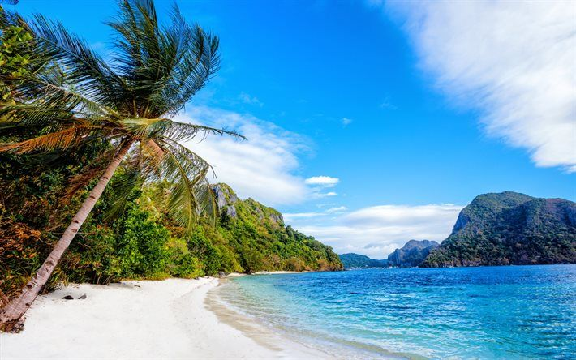
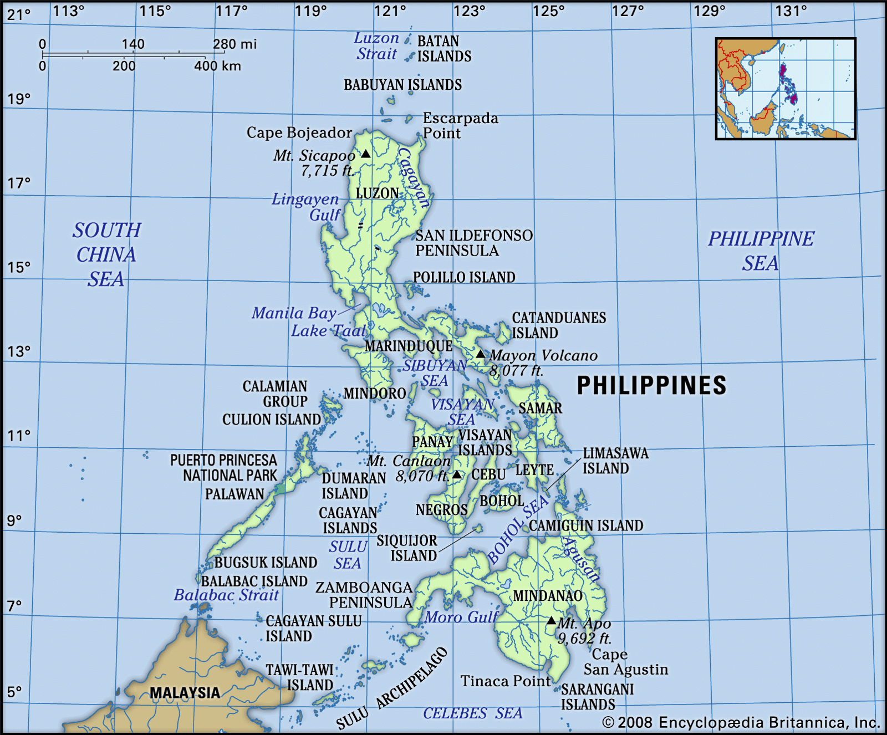

Welcome to Philippine Islands Vlogs
Explore the beauty of the Philippines through local eyes.
North
South
East
West
Explore the North
Apayao - Explore the rugged terrains and the unspoiled beauty of Purit Cave and Lussok Crystal Cave
Kalinga - Document the ancient tradition of tattooing and the vibrant culture in villages like Buscalan
Batanes (Itbayat Island) - Beyond the more familiar parts of Batanes, Itbayat offers secluded coves and cliffs
Cagayan (Palaui Island) - Show off the pristine beaches and the historic Cape Engaño lighthouse
Ilocos Norte (Pagudpud) - Highlight the serene beaches and the picturesque Patapat Viaduct
Explore the South
Explore the East

Explore the West
Use our interactive map
